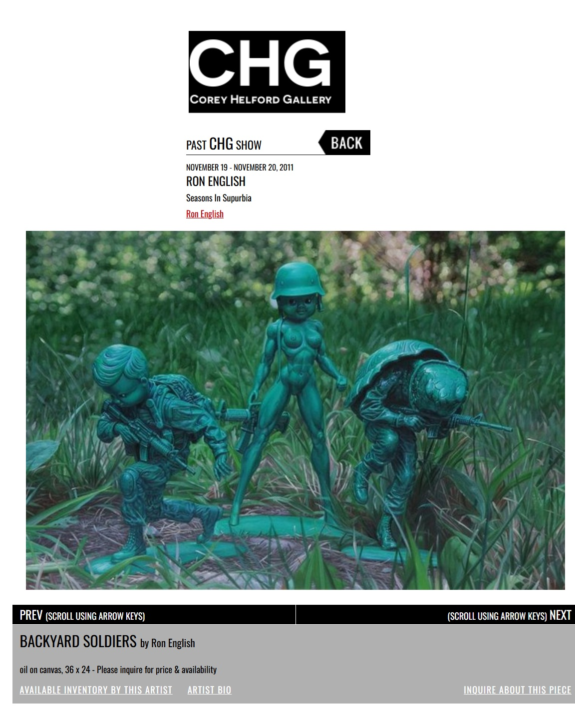

Exhibitions
Seasons In Supurbia, Corey Helford Gallery, Culver City, California, US, November 19–December 10, 2011.
Literature
Ron English, Status Factory: The Art of Ron English (San Francisco: Last Gasp of San Francisco, 2014), p. 156. ISBN 978-0867197891.
Ron English, Original Grin: The Art of Ron English (Paris: Cernunnos, 2019), p. 236. ISBN 978-2374950938.
Notes
This work appears on Corey Helford Gallery’s artwork page for the exhibition Seasons in Supurbia, available here, accessed April 11, 2026.
Ancillary Documentation
